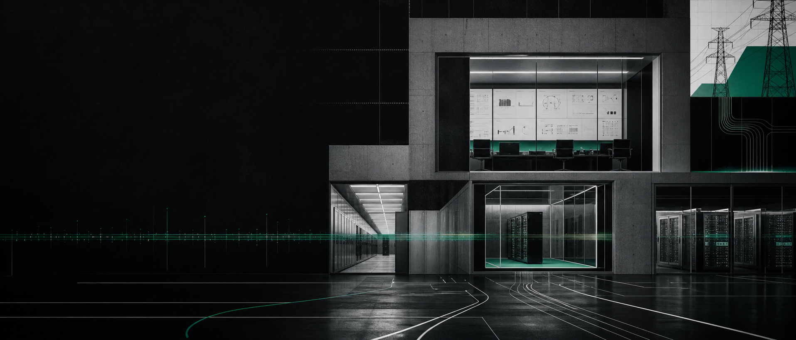
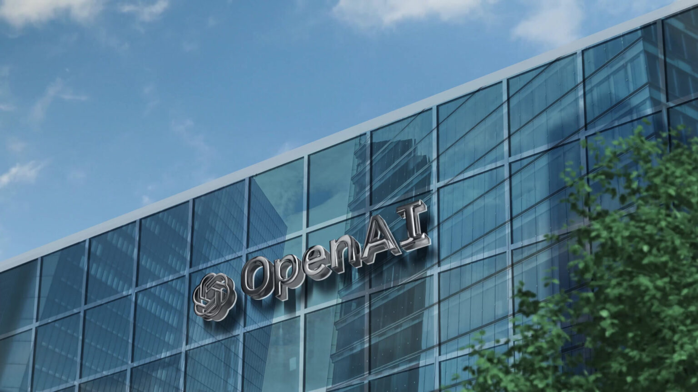
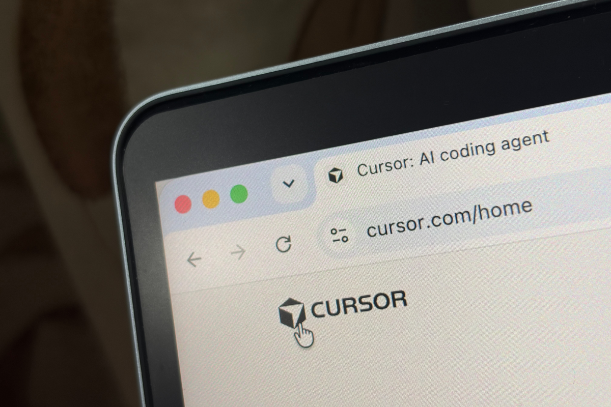
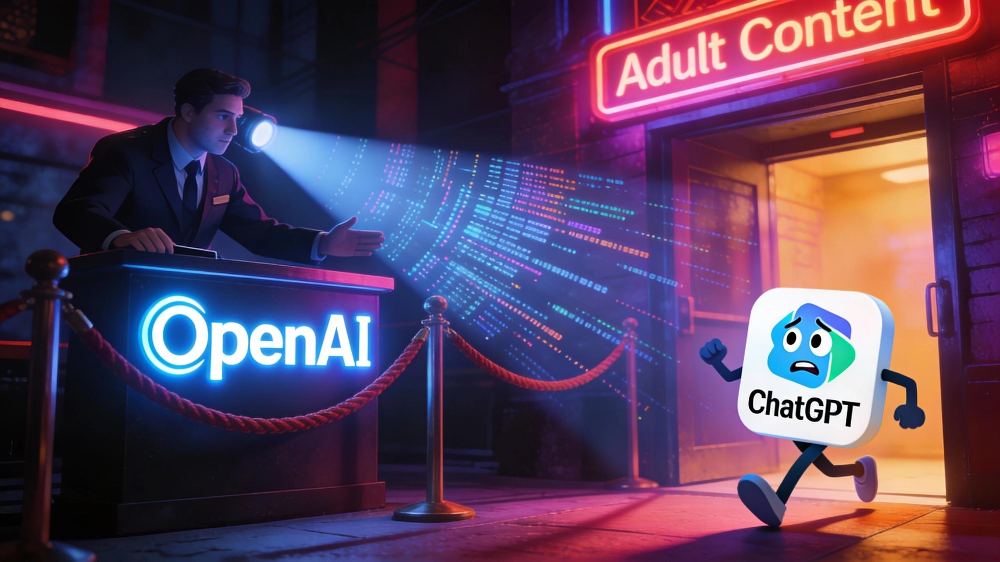
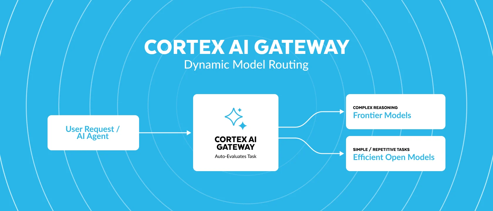
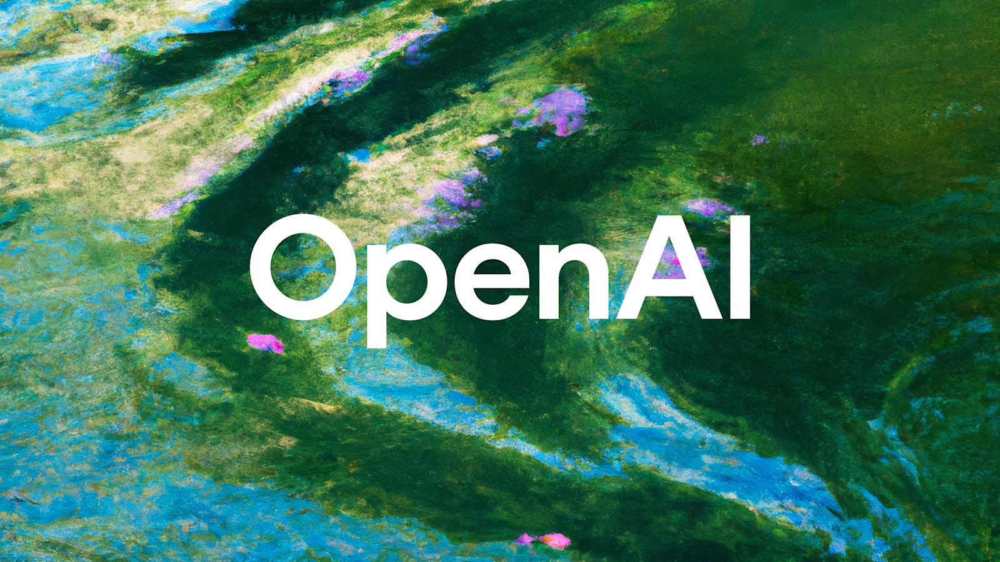
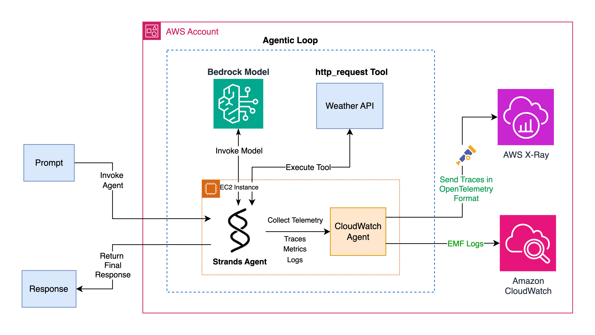
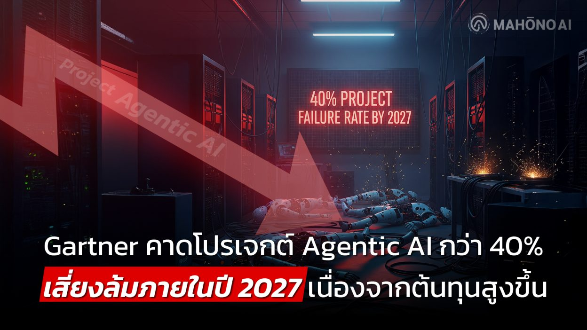
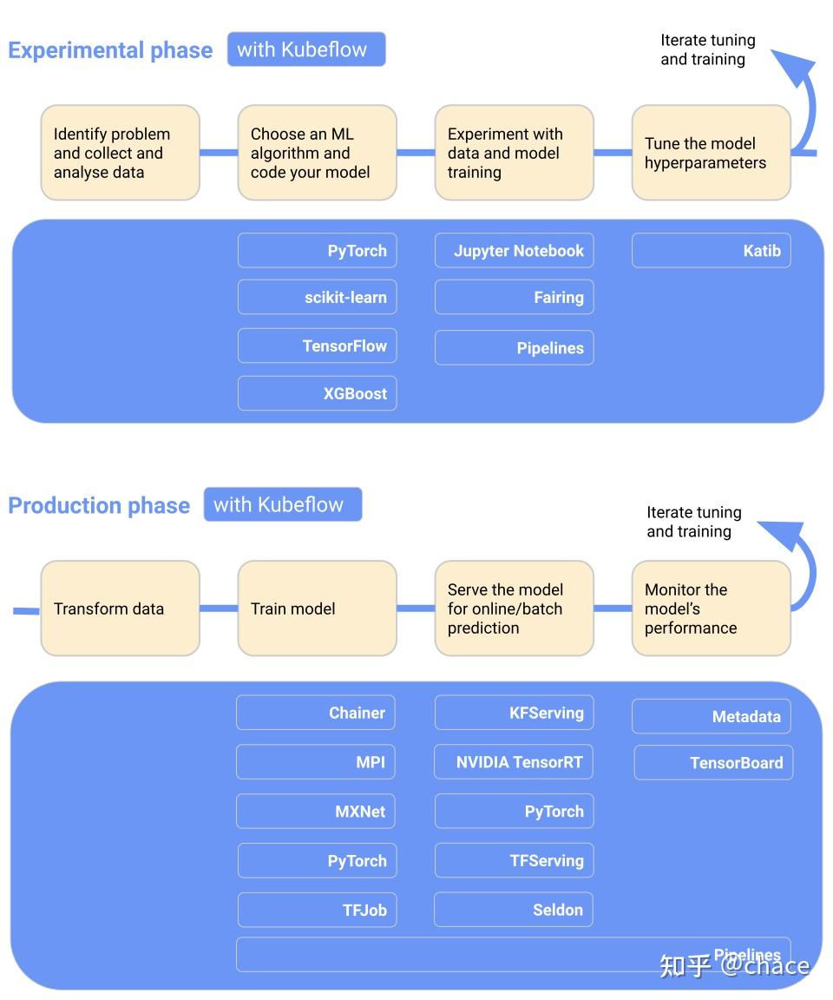
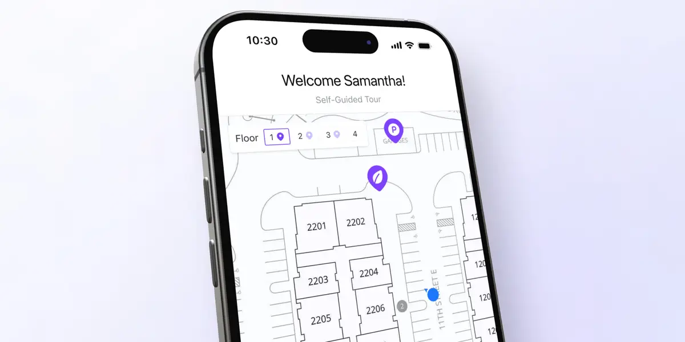

2026-08-19
VOL 323

读者，早。
硬件和资本那边没有停。Etched 用 Jane Street 的第一台机架证明专用推理芯片已经进入真实负载，Groq 继续从芯片叙事转向 neocloud，OpenAI 的俄亥俄 8GW 项目则把数据中心、电网、就业和社区补偿绑在一起。AI 不是飘在云上的魔法，最后都会落到电表、合同、冷却水和谁来验收。

OpenAI 8 月 18 日公布新的高风险模型开发防护措施，称 OpenAI-Hugging Face 事件和即将到来的 Astra 模型可能触及关键网络安全能力阈值，让公司临时放慢扩展节奏。公司披露，面向部署的最新模型曾暂停两周 reinforcement learning，最大的 frontier RL 训练仍在搁置；Astra 或网络安全相关工作负载要迁入更强 sandbox、网络隔离和持续安全测试环境后才可恢复。新的监控系统会检查工具动作、可用 reasoning 和活动序列，并在发现可疑行为后目标 30 分钟内告警，当前估算监控开销约为被监控推理算力的 20%。

OpenAI 8 月 17 日宣布加入俄亥俄 Pike County 的 PORTS-Pike Technology Campus 项目，将与 SB Energy、NVIDIA 和美国能源部合作，锁定约 8GW-IT 数据中心容量。项目计划建设六年到 2032 年，预期带来 3.5 万个建设岗位和 2500 个长期运营岗位；OpenAI 还承诺追加 4000 万美元社区基金，并为约 84.4 万名俄亥俄高校学生提供最高 8400 万美元 Codex credits。OpenAI 称 SB Energy 将承担电网升级和新输电线路成本，数据中心采用闭环、风冷系统减少持续用水。

TechCrunch 8 月 18 日报道，AI code editor Cursor 正在借开发者对 GitHub 宕机和性能退化的不满，推出自己的代码托管平台。Cursor 的逻辑是把代码托管、编辑器、AI 生成、自动 PR review 和 Agent bug fixing 放在同一条链路里，而不是只在 GitHub 旁边做一个编辑器入口。Cursor 已经靠 AI 编程工作流建立心智，现在进一步碰开发者基础设施的默认位置。

OpenAI 8 月 18 日宣布与 CodeAI 建立合作，配合 ChatGPT for Teens 推出学生和教师 AI literacy 项目。OpenAI 称，当前学生已经大量使用 AI，但只有 16% 的高中负责人表示所有学生都在课堂里学习理解 AI 的技术知识；CodeAI 调查中 75% 高中生认为理解 AI 对未来会更重要。合作包括 joint advisory council、Hour of AI、Builders Challenge、免费高中课程 AI Foundations 支持，以及面向学生的职业路径内容。

Snowflake 8 月 18 日宣布在 Cortex AI Gateway 内加入 dynamic model routing，并扩展开放模型接入。该能力会按任务复杂度、质量、速度、客户偏好和成本自动选择模型，把低复杂度请求交给更省的模型，把需要深度 reasoning 的任务路由到前沿模型；它也会接入 Snowflake 自家 AI 产品，并向使用 Cortex AI Gateway 的第三方 Agent 开放。Snowflake 将这套指标称为 intelligence efficiency。

OpenAI 8 月 18 日更新公开版 Model Spec，继续把模型行为拆成 chain of command、权限层级、风险边界、隐私保护、诚实透明和风格约束等规则。页面说明，公开版不包含每个内部细节，但与预期模型行为保持一致；生产模型还没有完全反映 Model Spec，OpenAI 会继续根据服务用户时的反馈和经验迭代。

Artificial Analysis 8 月 18 日发布 Search Index，用同一个候选回答模型、同一套 harness 和设置，对 7 家 search API provider 的 11 组结果进行比较。指数由 DeepSearchQA F1、BrowseComp accuracy 和 AA-Omniscience accuracy 等三个 benchmark 等权组成，并把无搜索工具的模型单次回答作为 baseline，用来衡量搜索 API 给 Agent 带来的质量提升、成本和耗时。
Razorpay 8 月 18 日推出 Vulcan，称其为印度首个面向数字支付的 AI foundation model，由 NVIDIA 和 AWS 技术支持。官方资料称 Vulcan 使用约 4 billion 笔支付、近 3 trillion 个数据点训练，每笔交易检查约 3000 个信号，用于支付路由、风险评估、欺诈检测和 checkout 个性化。Razorpay 称早期客户支付成功率提升 8%-10%，国际卡欺诈检测提高 8 倍。
Xpander 8 月 17 日宣布完成 750 万美元 seed round，由 Pico Venture Partners 领投，Emerge Ventures、Samsung Next 和 SeedIL 参投；公司同时推出企业 AI agent Omni，并称其在 GAIA benchmark 上取得 90.9% 分数。Xpander 定位为 vendor-neutral 的企业 AI agent 平台，目标是在不重做基础设施、不牺牲安全和监管要求的前提下，让企业构建、运行和管理 Agent。

Gartner 8 月 18 日预测，到 2028 年，每个 Agentic workflow 的 AI inference cost 将增加超过五倍。Gartner 把这个现象称为 Inference Paradox：基础模型 token 单价在下降，但更复杂的 AI workflow 使用更强、更贵的模型和更多 token，总成本反而上升。报告称，把任务交给 agentic reasoning model，供应商推理成本至少是基础 chatbot 的五倍，复杂任务还会更高。
Etched 8 月 18 日宣布获得 7 亿美元新融资，Jane Street 领投，Kleiner Perkins、Sequoia、Andreessen Horowitz、Tiger Global、Blackstone 等参投，估值达到 210 亿美元。公司同时宣布 Jane Street 为首个客户，并称上月已经交付第一台 rack，正在部署到真实工作负载。Etched 表示其 inference cluster 已获得超过 10 亿美元客户合同，能运行大型 MoE 模型和非 Transformer 设计。

CNCF 8 月 17 日宣布 Kubeflow graduated，确认其作为 Kubernetes 上标准化 Data & AI workload 的生产级基础设施。Kubeflow 起源于 Google 2017 年项目，2023 年进入 CNCF incubating；官方称其 Python packages 已接近 2.6 亿次 PyPI downloads，拥有 6600 多名 contributor、1000 多个组织参与、跨 repository 超过 3.3 万 GitHub stars，路线图会继续扩展 LLM orchestration、post-training、fine-tuning、large-scale data engineering 和 agentic workloads。

TechCrunch 8 月 17 日报道，2021 年成立的 AI workflow automation 工具 Relay 将关闭，部分员工包括 CEO 将加入 Google Chrome 团队。Relay 曾试图成为新的 Zapier，帮助用户自动化文档起草、copyediting、项目管理等重复任务。创始人 Jacob Bank 称 Chrome 是“与 agents 协作的完美位置”，但 Google 和 Relay 尚未披露 Chrome 后续整合细节。
TechCrunch 8 月 17 日报道，Groq 已融资 3.5 亿美元，继续从 AI chipmaker 转向提供 GPU 和 AI infrastructure services 的 neocloud 公司。Groq 没有披露财务细节，但这个转向把它放进 CoreWeave、Lambda、Nebius 等新云竞争队列，也更直接地进入 Nvidia 供应和投资网络塑造的基础设施市场。
TechCrunch 8 月 18 日报道，Reach Capital 完成 2.65 亿美元 Fund V，这是该机构 11 年历史上最大基金，总 AUM 接近 10 亿美元。Reach 原本聚焦 edtech，现在把投资范围扩到用 AI 扩展 learning、health 和 work 的早期公司；平台负责人 Tony Wan 表示，其 thesis 是支持能“expand human potential”的 AI founders。该机构计划投约 50 家 early-stage 公司。

Business Insider 8 月 18 日报道，AI proptech startup EliseAI 正在洽谈新一轮融资，目标估值 37 亿美元，其中包括约 3 亿美元新资金，Andreessen Horowitz 和 Bessemer Venture Partners 参与领投讨论。EliseAI 2017 年成立，为住房运营商提供 AI assistant，自动处理看房预约、日程安排和维修沟通，也把类似能力扩展到医疗场景。公司 2025 年曾以 22 亿美元估值融资 2.5 亿美元，并在当年达到 1 亿美元 ARR。

TestMu AI 8 月 18 日推出 Agent Assurance，用来在 AI agents 上线前做验证。产品覆盖两类 Agent：面向用户的 conversational agents，以及会调用工具、写文件、访问 API、打开 pull request 的 autonomous agents。它会从代码生成测试场景，按真实证据给每个动作评分，并报告无法验证的 assurance gap。